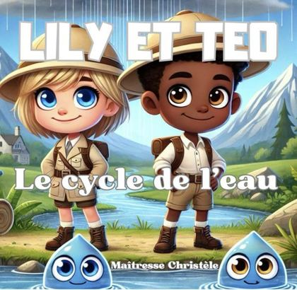
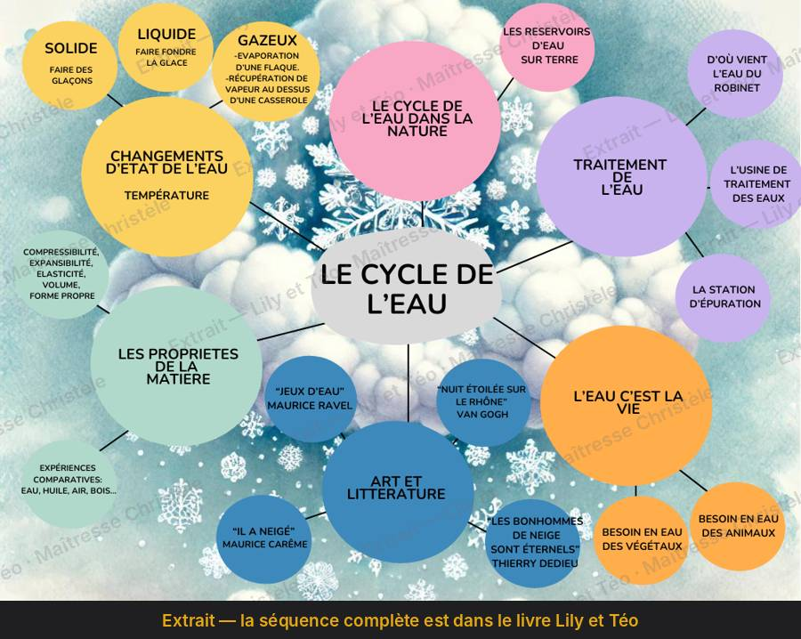

Accueil › Livres pour enfants › Le cycle de l'eau

Le cycle de l'eau
Évaporation, nuages, pluie — un livre de Maîtresse Christèle
Où va l'eau des flaques quand elles disparaissent ? Comment se forment les nuages, la pluie, la neige ou la grêle ? Lily et Téo suivent le grand voyage de l'eau dans la nature, des nuages jusqu'aux nappes souterraines, aux caniveaux, aux rivières, aux fleuves, aux mers et aux océans.
La vidéo : Lily devient une goutte d'eau
En 1 minute 30, Lily se transforme en goutte d'eau et vit tout le cycle : la pluie, le ruisseau, la rivière, l'océan, l'évaporation, les nuages et la neige. Idéale pour lancer la séance en classe ou à la maison.
Ce que l'enfant découvre
- L'évaporation
- La condensation et la formation des nuages
- Les précipitations : la pluie, la neige et la grêle
- Le trajet de l'eau : nappes souterraines, caniveaux, rivières, fleuves, mers et océans
Dans le livre
- Un organigramme d'activités pluridisciplinaires pour la classe
Pour les enseignants : l'organigramme
Ce livre est accompagné d'un organigramme pluridisciplinaire pour construire une séquence complète à partir de l'histoire (Cycle 2).

Ce qu'en disent les lecteurs
★★★★★SuperMerci pour ce joli petit livre qui explique si bien des notions que nous avons du mal à expliquer à nos enfants. Je recommande fortement toute la série de livres.
Avis Amazon, septembre 2024
★★★★★Très bon livreJ'ai beaucoup aimé l'histoire et mes enfants aussi. Elle est instructive, détaillée et facile à comprendre. Les illustrations sont très jolies. Je recommande.
Avis Amazon, septembre 2024
★★★★★Très instructifL'histoire est simple et mignonne, les illustrations sont explicites.
Avis Amazon, novembre 2024
Dans la même collection
 Lily et Téo font le tour du monde
Lily et Téo font le tour du monde Lily et Téo contre le harcèlement
Lily et Téo contre le harcèlementEnvie de le découvrir ?
Le livre est disponible sur Amazon.
Voir « Le cycle de l'eau » sur Amazon →